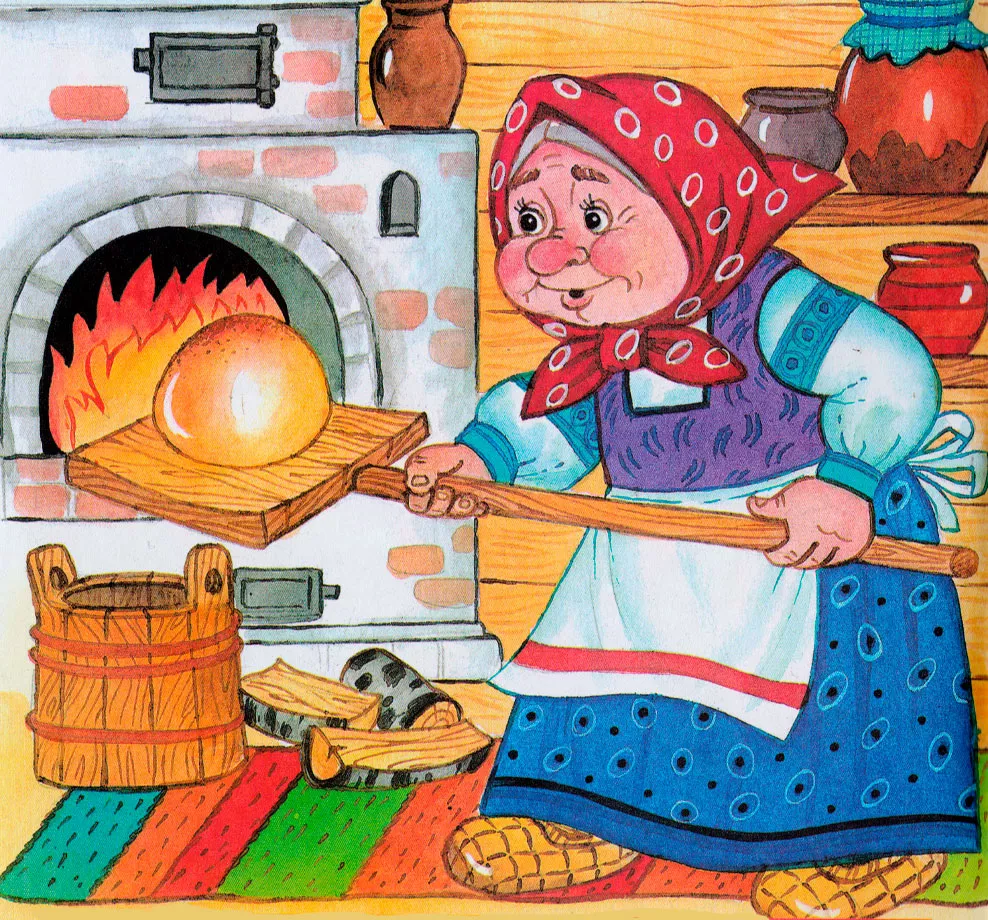
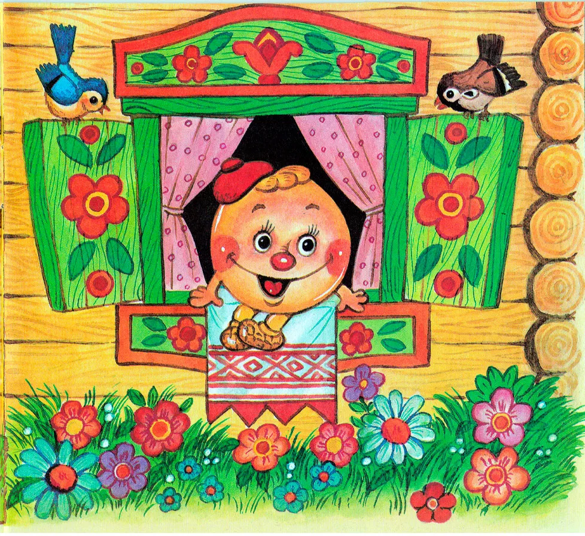
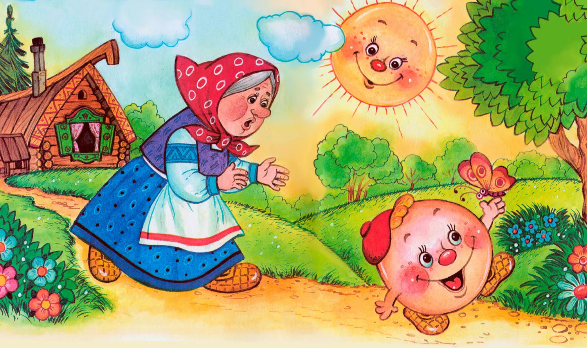
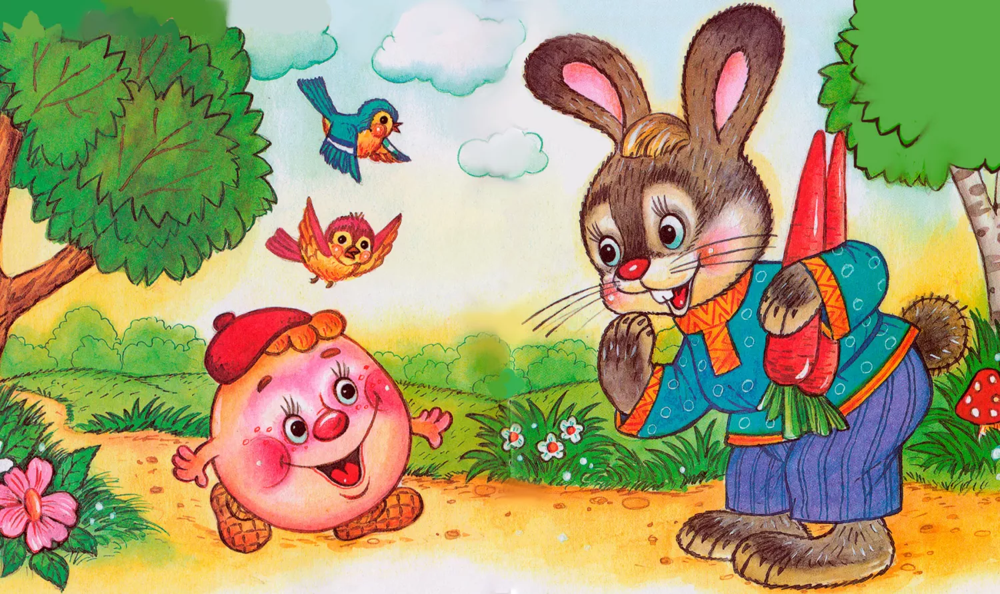
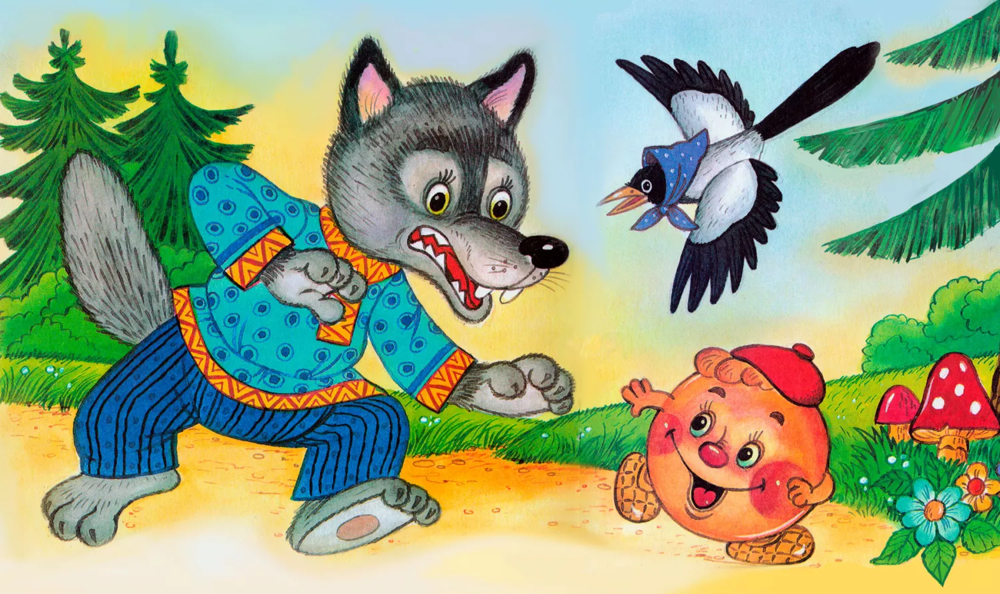
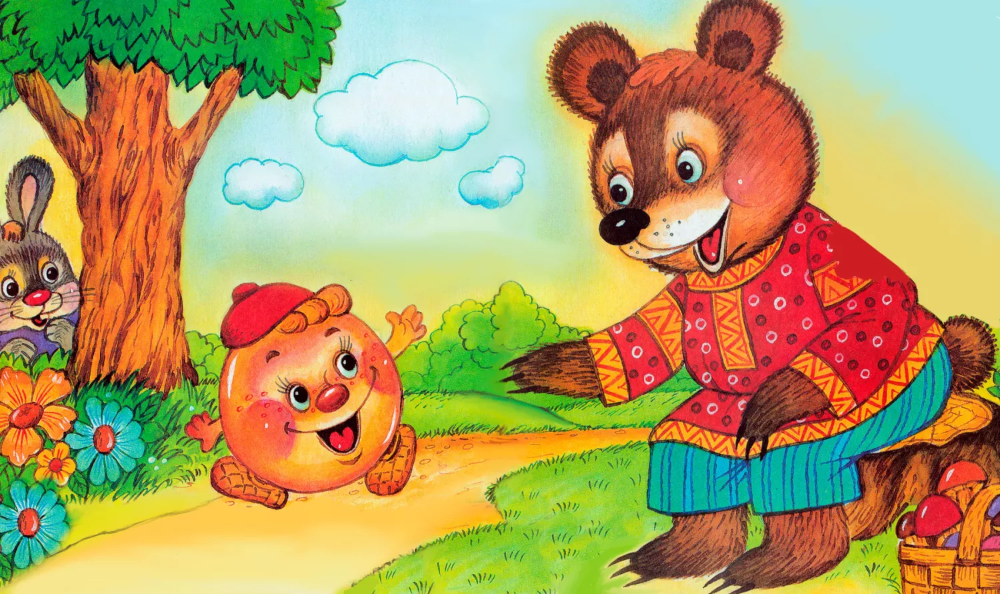
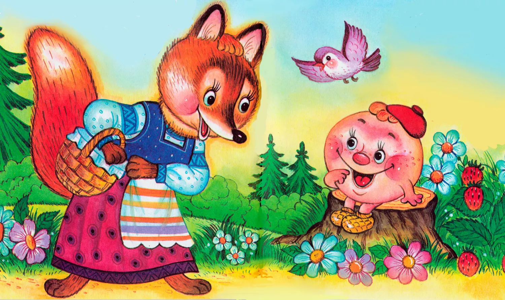
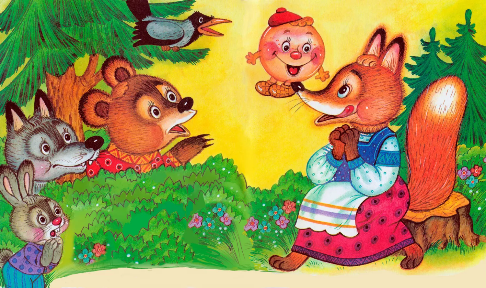

Жил-был старик со старухою. Просит старик:
— Испеки, старуха, колобок!
— Из чего печь — то? Муки нету, — отвечает ему старуха.
— Э — эх, старуха! По коробу поскреби, по сусеку помети; авось муки и наберется.

Взяла старуха крылышко, по коробу поскребла, по сусеку помела, и набралось муки пригоршни с две. Замесила на сметане, изжарила в масле и положила на окошечко постудить.

Колобок полежал — полежал, да вдруг и покатился — с окна на лавку, с лавки на пол, по полу да к дверям, перепрыгнул через порог в сени, из сеней на крыльцо, с крыльца — на двор, со двора за ворота, дальше и дальше.

Катится колобок по дороге, а навстречу ему заяц:

— Колобок, колобок! Я тебя съем.
— Не ешь меня, косой зайчик! Я тебе песенку спою, — сказал колобок и запел:
Я по коробу скребен,
По сусеку метен,
На сметане мешон,
Да в масле пряжон,
На окошке стужон;
Я от дедушки ушел,
Я от бабушки ушел,
И от тебя, зайца, не хитро уйти!
И покатился себе дальше; только заяц его и видел!
Катится колобок, а навстречу ему волк:

— Колобок, колобок! Я тебя съем!
— Не ешь меня, серый волк! Я тебе песенку спою, — сказал колобок и запел:
Я по коробу скребен,
По сусеку метен,
На сметане мешон,
Да в масле пряжон,
На окошке стужон;
Я от дедушки ушел,
Я от бабушки ушел,
Я от зайца ушел,
И от тебя, волка, не хитро уйти!
И покатился себе дальше; только волк его и видел!
Катится колобок, а навстречу ему медведь:

— Колобок, колобок! Я тебя съем.
— Не ешь меня, косолапый! Я тебе песенку спою, — сказал колобок и запел:
Я по коробу скребен,
По сусеку метен,
На сметане мешон,
Да в масле пряжон,
На окошке стужон;
Я от дедушки ушел,
Я от бабушки ушел,
Я от зайца ушел,
Я от волка ушел,
И от тебя, медведь, не хитро уйти!
И опять укатился, только медведь его и видел!
Катится, катится «колобок, а навстречу ему лиса:

— Здравствуй, колобок! Какой ты хорошенький. Колобок, колобок! Я тебя съем.
— Не ешь меня, лиса! Я тебе песенку спою, — сказал колобок и запел:
Я по коробу скребен,
По сусеку метен,
На сметане мешон,
Да в масле пряжон,
На окошке стужон;
Я от дедушки ушел,
Я от бабушки ушел,
Я от зайца ушел,
Я от волка ушел,
И от медведя ушел,
А от тебя, лиса, и подавно уйду!
— Какая славная песенка! — сказала лиса. — Но ведь я, колобок, стара стала, плохо слышу; сядь-ка на мою мордочку да пропой еще разок погромче.
Колобок вскочил лисе на мордочку и запел ту же песню.

— Спасибо, колобок! Славная песенка, еще бы послушала! Сядь-ка на мой язычок да пропой в последний разок, — сказала лиса и высунула свой язык; колобок прыг ей на язык, а лиса — ам его! И съела колобка…